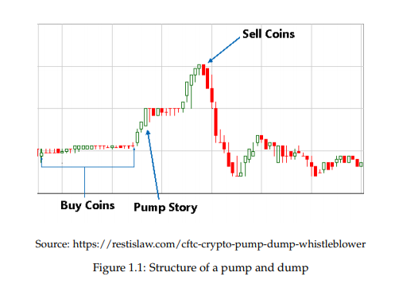

Identifying and Predicting price manipulations in crypto-currency markets
For my Engineering Honors Project in 2019 I performed an analysis of cryptocurreny price manipulations called "pump and dumps" and attempted to train artificial models to predict them.
I used python scripts in order to scrape data from the cypto-exchange Binance and created features to train machine learning models. Social media data was also collected and analysed in an attempt to predict manipulations using social media features.
Date: 2019 - 2020
Research Abstract
This paper analyses crypto-currency market manipulation tactics known as pump and dump schemes. Historic market data is scanned for patterns which indicate pump events and we explore
how these pumps are organised through the social media platform Telegram. Logistic Regression and Random Forest models are trained to classify these events with an accuracy of up to
88.9% with a precision score of 0.92. Next, the artificial models are trained to predict these events up to one hour before they occur, using specially constructed features extracted
from candlestick and order book market data. Finally, we present initial work involving scraping social media for coin names and symbols, on the supercomputer Theta at the Argonne
National Laboratory in Chicago, Illinois. We also explore how additional training features could be constructed by using sentiment analysis on the extracted social media data.
Problem
There is a big concern in the crypto community that some coin markets are turning "rotten", meaning that market prices are manipulated by groups of people in order to turn a quick profit.
Schemes called "pump and dumps" are often carried out on low valued alt-coins, in which the price of the coin is pumped up by manipulators and later dumped when they sell all of their
shares when the price is high.
Pump and dump schemes are a type of investment fraud where an individual or group of people buy a large number of shares at a low price which results in the share value rising rapidly
(the pump). The group then convinces other people to buy all of these shares at the increased price, by spreading misleading positive information about the stock. Once all of the shares
have been sold, the share value returns to the original price (the dump) leaving shareholders with shares that are worth much less than they bought them for.
The people who organize pump and dump events have the potential to make a lot of money because they create an opportunity to sell a large number of shares at a
significantly higher price than they bought them for. The people who have been tricked into buying the stock at the inflated price lose their investment. Pump participants with left
over shares might be able to sell out when the coin is re-pumped at a later date, however this may never happen.
Pump and dump events can be identified by looking at the historical price data of crypto coins. A common pattern is that the pump organizers will start to accumulate shares while the market
price is still fairly low. Once they start accumulating the shares, this drives the price up. As the price is rising, the pump organizers may start spreading false positive information about
the coin, creating some hype. This is where it is easy to suck in novice buyers, because they believe that the price will keep going up. Once the pump organizers are satisfied with the inflated
market price, they sell all of their accumulated shares at once, making a big profit. This sends the market price down and leaves all of the buyers that were tricked by the pump with shares that
are worth much less than they paid for them. Figure 1.1 shows an example of the typical shape of a pump and dump event.

In order to pump a coin, a large amount of buy orders must be completed in a very short amount of time. Therefore, groups which perform pumps must have a significant number of members in order
for the pump to be successful. Anonymous messaging platforms such as Telegram are used to plan and execute pump and dumps on alt coins. It is common to find pump and dump communities on telegram
where pumps are advertised. The admin will post messages in the channel promoting the time and day of the pump. The admin also posts the rules of the pump to make sure all of the participants know
what to do when the pump starts. Participants are told to buy big when the event starts and then to sell in small chunks in order to keep the price high. At the time of the pump, the admin posts a
text message or picture which indicates what coin is to be pumped. Everyone then rapidly begins to buy the coin to try and get in before the price skyrockets.
The individuals who organize pump and dumps are the ones who profit the most [7]. This is because only the admin of the group knows what coin is going to be pumped. This means that during the days
leading up to the pump, they can slowly accumulate coins that they can sell at the inflated price. Channel admins also release the coin to pump to the premium channel members before the public
channel so that the premium members have a chance to buy in at a low price. When pump participants start rapidly buying coins, it is in fact the admin selling everyone their accumulated assets.
When the price peaks, everyone attempts to sell their coin, however they often struggle because there are no buyers. In the end, the admin and members in the premium channel make most of the profit.
The admin then reports how successful the pump was, by posting their percentage of profit in the public channel. This can be anywhere from 100% - 500% and makes future pumps look attractive to new
members of the community. This also encourages newcomers to pay for the premium channel, because the admin is promoting how much more profit can be made when the coin to be pumped is known early.
Aim and Objectives
The project will attempt to identify a common pattern that pump and dump events look like by analyzing crypto price data with python scripts. Visualizations of the events in the form of graphs will
be developed and analyzed for patterns. Social media posts and comments on platforms such as Telegram will be downloaded and analyzed with text classification scripts, for indications of groups
attempting to promote certain crypto coins. The project will then attempt to match social media influence with pump and dump events in order to find a relationship between the timing of the social
media posts and the dumping event of the coin.
Proposed Solution
This project will investigate the pattern of pump and dump schemes and attempt to build more predictive tools that can identify pump and dump events before the effected market is dumped.
Currently, the final deliverables include python scripts for:
- Downloading candlestick data and order book history from the Binance exchange and extracting pump and non-pumped datapoints using a peak detection algorithm
- Scraping Telegram, Reddit and Twitter for coin mentions
- Verifying datapoints by cross referencing Telegram data and pumped / non-pumped datapoints
- Artificial models performing binary classification on pumped / non-pumped datapoints
- Merging candlestick data and order book data for each datapoint
- Extracting features from candlestick and order book data
- Artificial models attempting to predict pump events with extracted features
Evaluation method
The solution will be evaluated by training the artificial prediction models and observing the precision at which pumped datapoints can be classified. A precision score of less
than 0.8 or 80% will be considered as failure in terms of being able to accurately predict pump and dump events. This is due to the fact that the purpose of the solution is to
protect traders from losing money on risky coin investments. If the model cannot provide accurate predictions, then this may cause the trader to lose money.
Link to full report